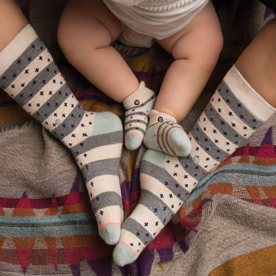
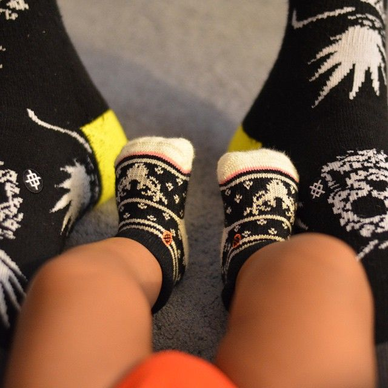
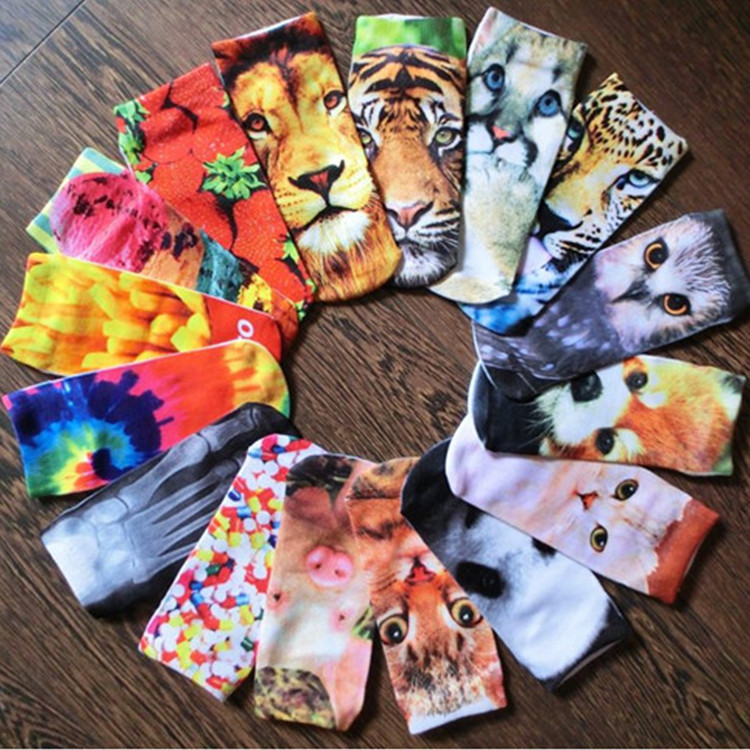
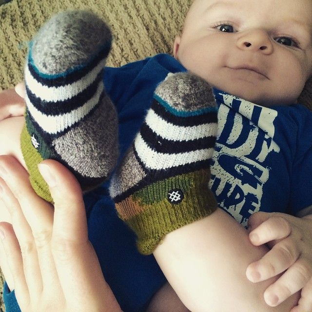

<div class="carousel-wrapper">
  <div class="carousel">
    <div class="slide"></div>
    <div class="slide"></div>
    <div class="slide"></div>
    <div class="slide"></div>
    <div class="slide"></div>
  </div>

  <div class="kids-carousel-arrows">
    <button type="button" class="kids-carousel-arrow prev-arrow"><i class="fa fa-arrow-left" aria-hidden="true"></i></button>
    <button type="button" class="kids-carousel-arrow next-arrow"><i class="fa fa-arrow-right" aria-hidden="true"></i></button>
  </div>

  <script type="text/javascript">

      $(".carousel").slick({
        dots: true,
        infinite: true,
        cssEase: "linear"
      });
      $('.prev-arrow').click(function(){
        $(".carousel").slick('slickPrev');
      });
      $('.next-arrow').click(function(){
        $(".carousel").slick('slickNext');
      });

  </script>
</div>
